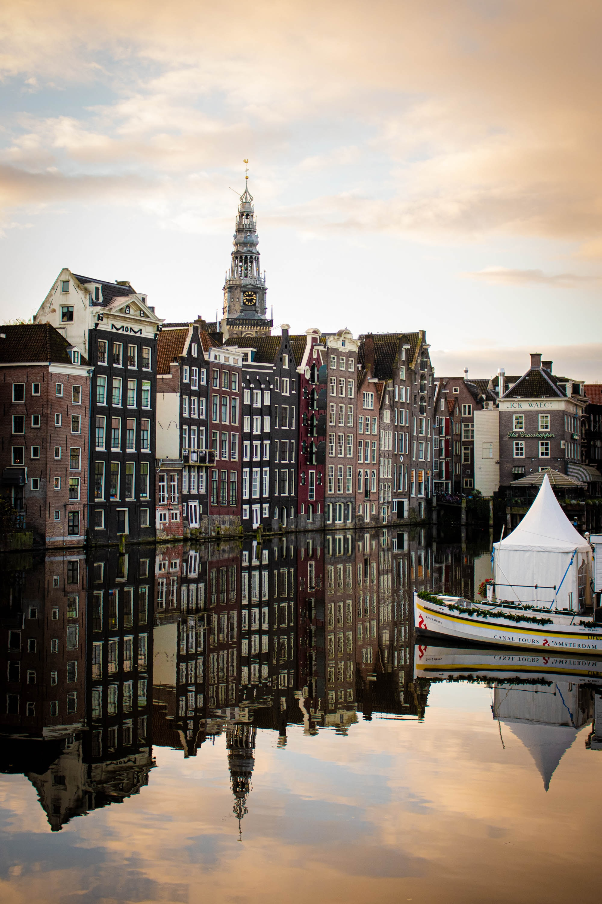

Keep calm and travel on....

Amsterdam
Amsterdam is the Netherlands' capital,known for its arartistic heritage,elabrote canal system and narrow houses with garbled facades.

Kashmir
Kashmir is often called "Paradise on Earth" because of its scenic beauty.Kashmir beauty includes landscape,snow-capped mountains,green valleys.

Bali
Bali ia a province of Indonesia and the westmost of Lesser Sunda Islands.A tropical paradise of Indonesia with unique culture and religion.